7074 operations on 17 sheets · products that interchange most share a sheet · on each sheet, "⇄CODE p.N" means change for that line on page N · every stop links to apis.io

p.1 File Storage, Subscriptions, N +4
450 operations · 22 lines
- File Storage
- Subscriptions
- N
- Database Tools Identities
- Load Balancers
- Media Assets
- Actions
Interchanges to p.2 (4), p.3 (1), p.8 (4), p.10 (14), p.11 (2), p.12 (6), p.13 (1), p.15 (1), p.16 (2)
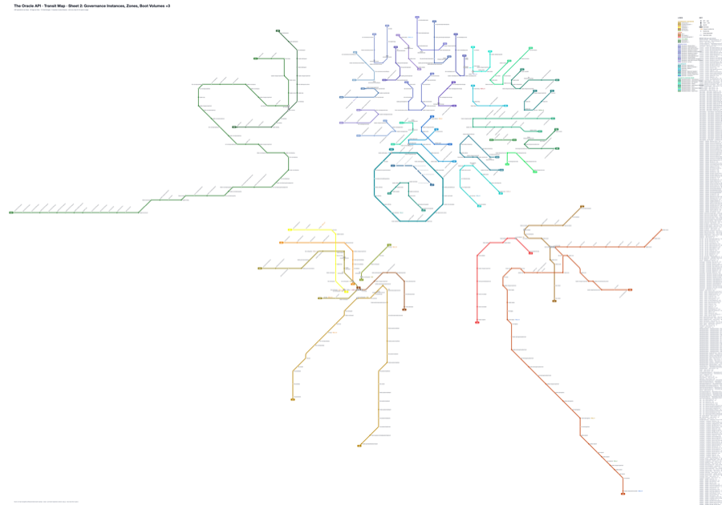
p.2 Governance Instances, Zones, Boot Volumes +3
449 operations · 40 lines
- Governance Instances
- Zones
- Boot Volumes
- goldenGate
- GenerativeAi
- MarketplacePublisher
Interchanges to p.1 (4), p.3 (1), p.6 (1), p.7 (1), p.8 (1), p.10 (5), p.11 (1), p.12 (1), p.13 (1), p.14 (2), p.15 (2), p.16 (2)
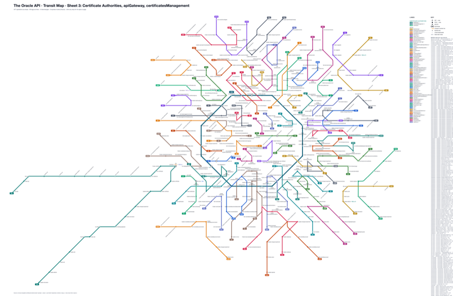
p.3 Certificate Authorities, apiGateway, certificatesManagement
447 operations · 69 lines
- More
- Certificate Authorities
Interchanges to p.1 (1), p.2 (1), p.10 (5), p.16 (2)
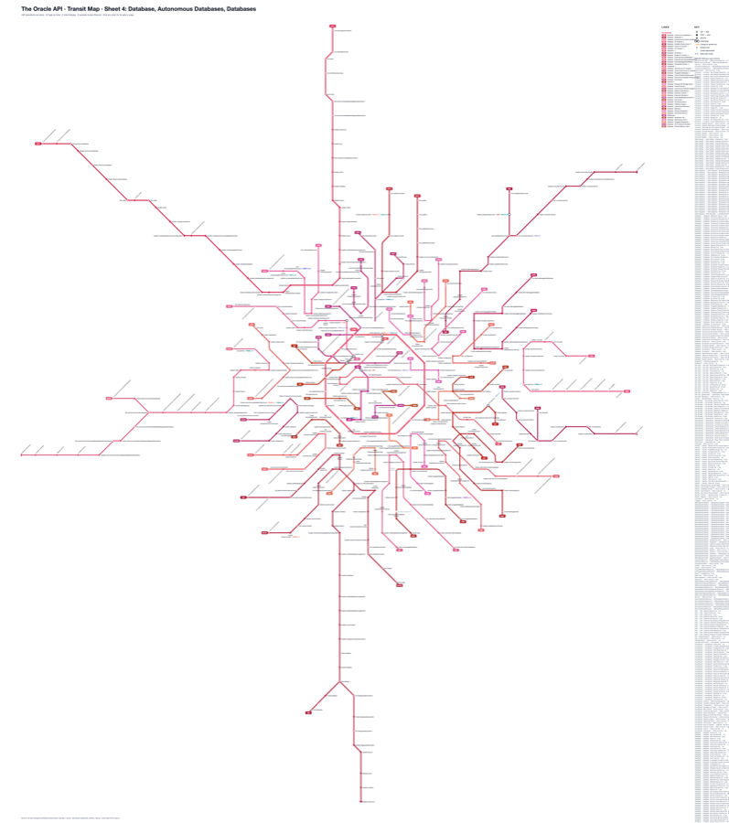
p.4 Database, Autonomous Databases, Databases
446 operations · 42 lines
Interchanges to p.10 (5), p.11 (12), p.13 (2), p.16 (1)
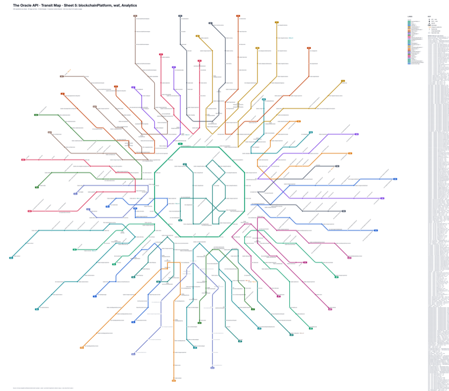
p.5 blockchainPlatform, waf, Analytics
446 operations · 32 lines
Interchanges to p.10 (10)
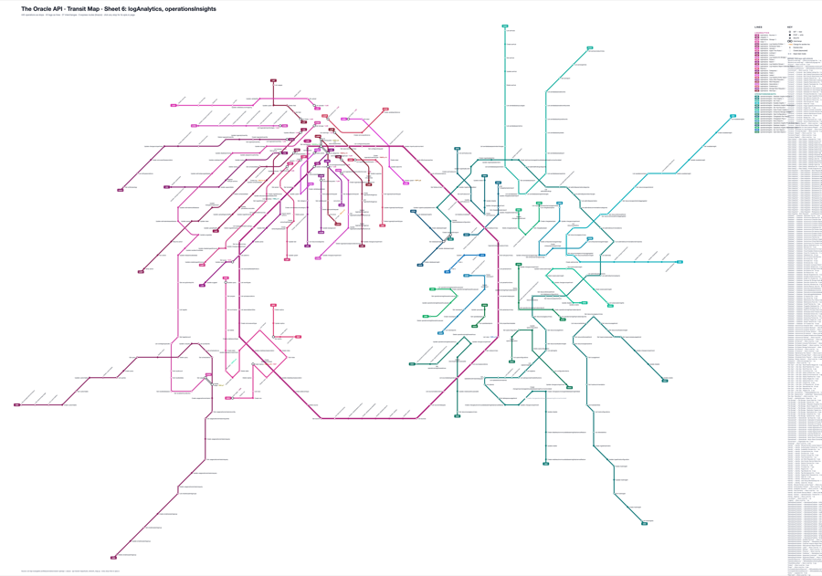
p.6 logAnalytics, operationsInsights
445 operations · 43 lines
- logAnalytics
- operationsInsights
Interchanges to p.2 (1), p.7 (1), p.8 (1), p.9 (1), p.10 (3), p.11 (1), p.13 (1), p.14 (2), p.15 (1)
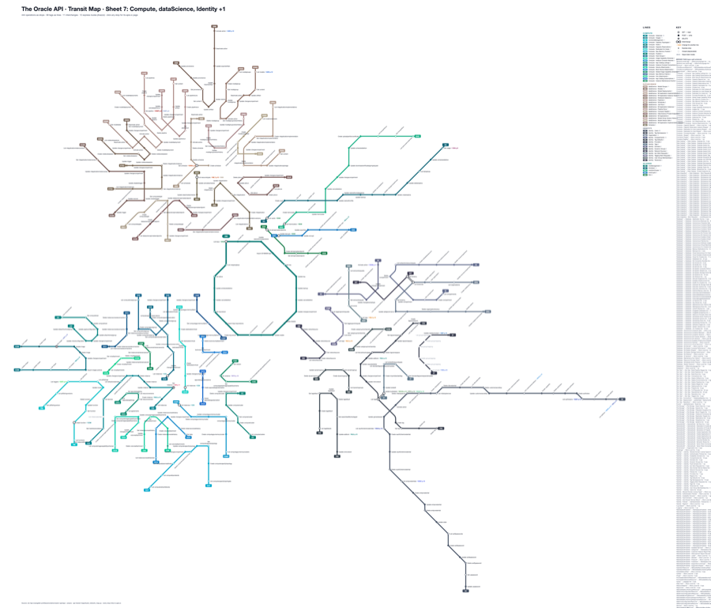
p.7 Compute, dataScience, Identity +1
444 operations · 58 lines
- Compute
- dataScience
- Identity
- 20180608
Interchanges to p.2 (1), p.6 (1), p.8 (2), p.10 (8), p.11 (2), p.12 (2), p.13 (3), p.14 (1), p.15 (8), p.16 (2)
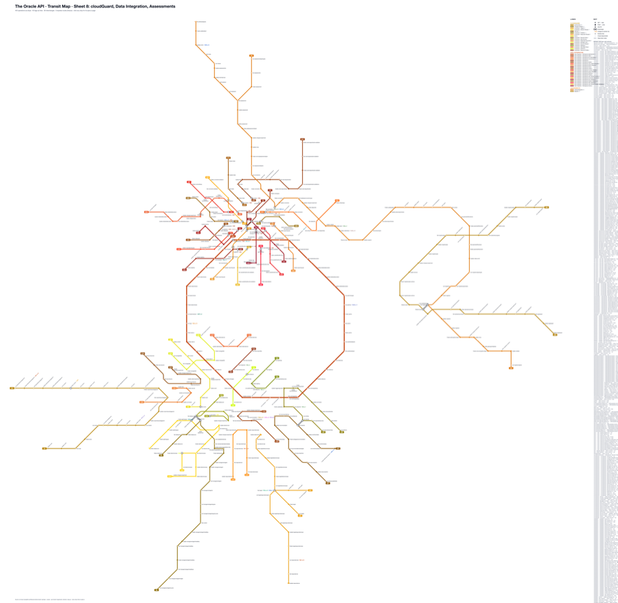
p.8 cloudGuard, Data Integration, Assessments
443 operations · 40 lines
- cloudGuard
- Data Integration
- Assessments
Interchanges to p.1 (4), p.2 (1), p.6 (1), p.7 (2), p.9 (1), p.10 (5), p.11 (2), p.12 (7), p.13 (2), p.15 (1), p.16 (1), p.17 (1)
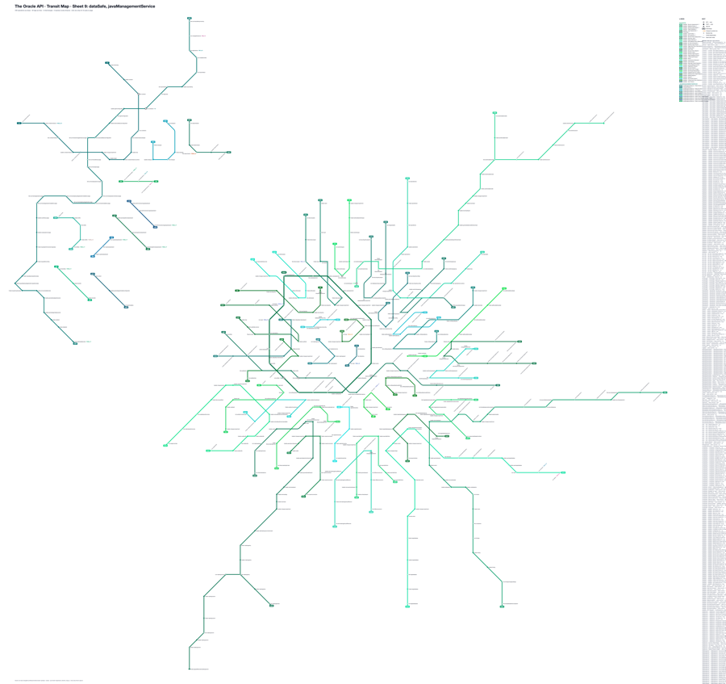
p.9 dataSafe, javaManagementService
439 operations · 49 lines
- dataSafe
- javaManagementService
Interchanges to p.6 (1), p.8 (1), p.10 (2), p.11 (1), p.12 (4), p.14 (2), p.15 (4), p.17 (7)
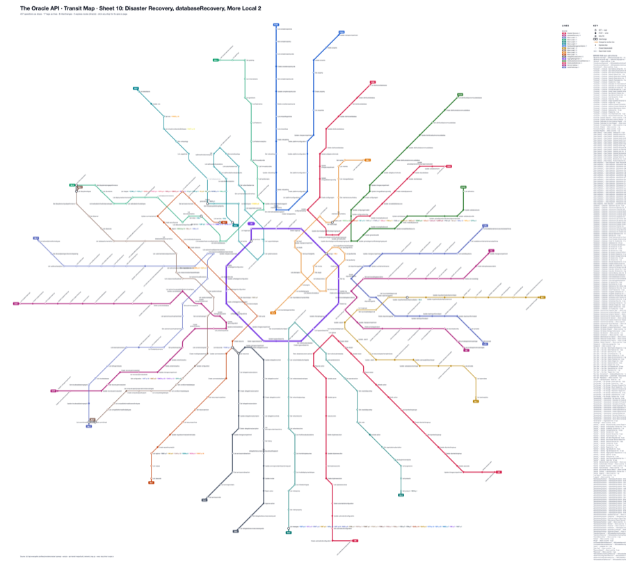
p.10 Disaster Recovery, databaseRecovery, More Local 2
437 operations · 17 lines
Interchanges to p.1 (14), p.2 (5), p.3 (5), p.4 (5), p.5 (10), p.6 (3), p.7 (8), p.8 (5), p.9 (2), p.11 (4), p.12 (4), p.13 (6), p.14 (3), p.15 (3), p.16 (6)
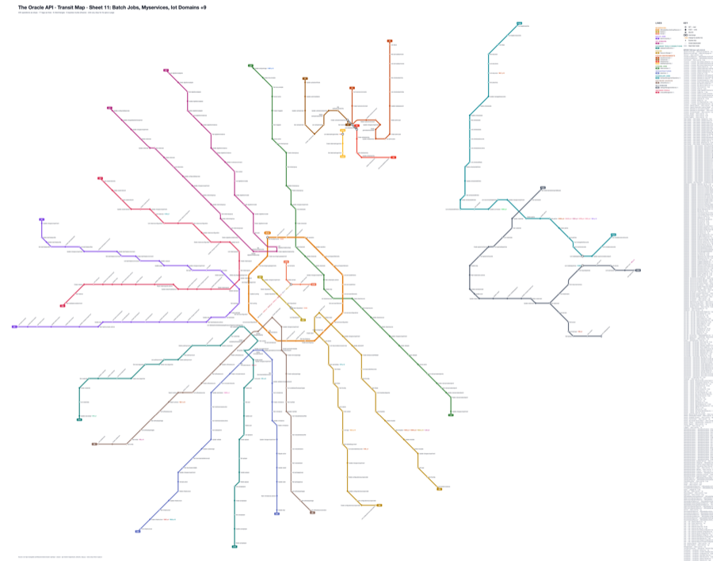
p.11 Batch Jobs, Myservices, Iot Domains +9
435 operations · 17 lines
- Batch Jobs
- Myservices
- Iot Domains
- Stacks
- Database Tools Connections
- Fusion Environments
- Stream Jobs
- Scheduler Jobs
- Infrastructures
- Software Sources
- Wls Domains
- Instance Pools
Interchanges to p.1 (2), p.2 (1), p.4 (12), p.6 (1), p.7 (2), p.8 (2), p.9 (1), p.10 (4), p.12 (5), p.14 (2), p.15 (1)
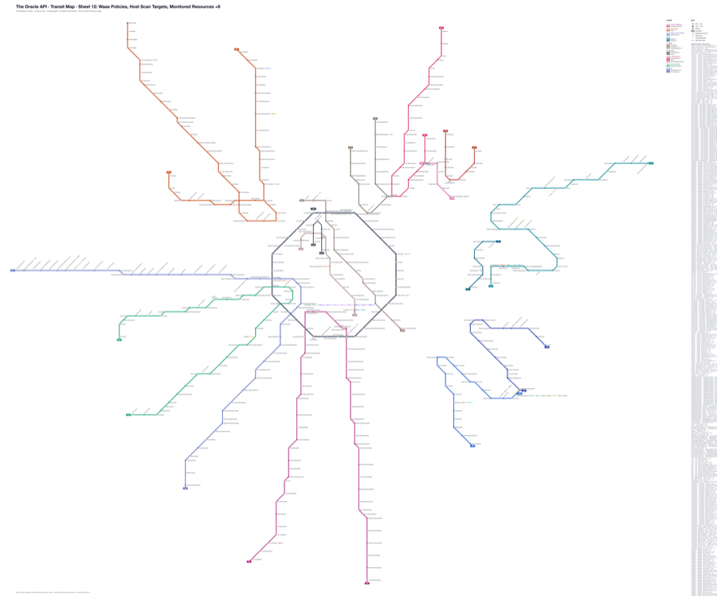
p.12 Waas Policies, Host Scan Targets, Monitored Resources +6
430 operations · 16 lines
- Waas Policies
- Host Scan Targets
- Monitored Resources
- Runs
- Alarms
- Agent Endpoints
- Clusters
- Fsu Collections
- Models
Interchanges to p.1 (6), p.2 (1), p.7 (2), p.8 (7), p.9 (4), p.10 (4), p.11 (5), p.13 (9), p.14 (3), p.16 (1), p.17 (2)
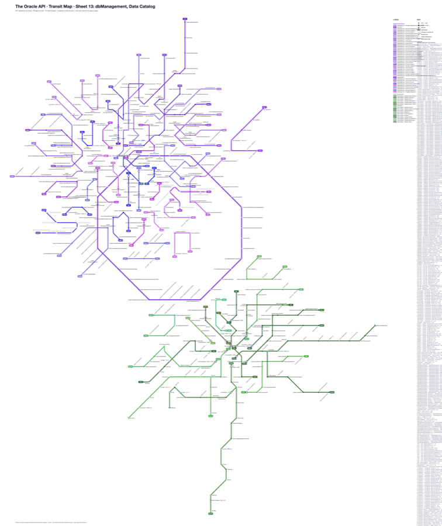
p.13 dbManagement, Data Catalog
427 operations · 59 lines
Interchanges to p.1 (1), p.2 (1), p.4 (2), p.6 (1), p.7 (3), p.8 (2), p.10 (6), p.12 (9), p.15 (5)
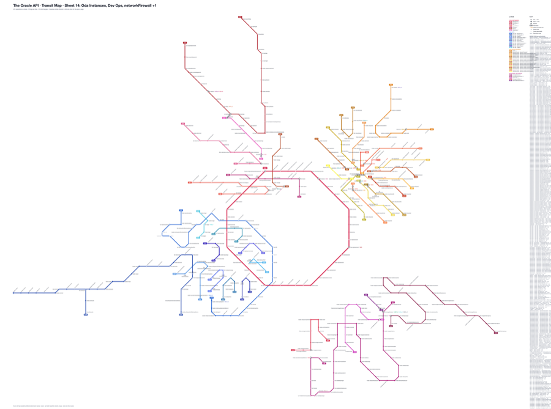
p.14 Oda Instances, Dev Ops, networkFirewall +1
425 operations · 39 lines
- Oda Instances
- Dev Ops
- networkFirewall
- Managed Instances
Interchanges to p.2 (2), p.6 (2), p.7 (1), p.9 (2), p.10 (3), p.11 (2), p.12 (3), p.16 (2)
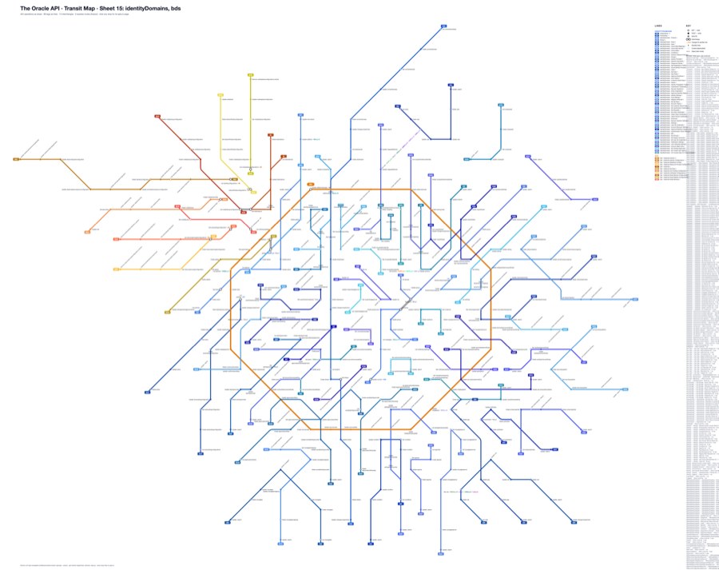
p.15 identityDomains, bds
424 operations · 68 lines
Interchanges to p.1 (1), p.2 (2), p.6 (1), p.7 (8), p.8 (1), p.9 (4), p.10 (3), p.11 (1), p.13 (5), p.16 (1)
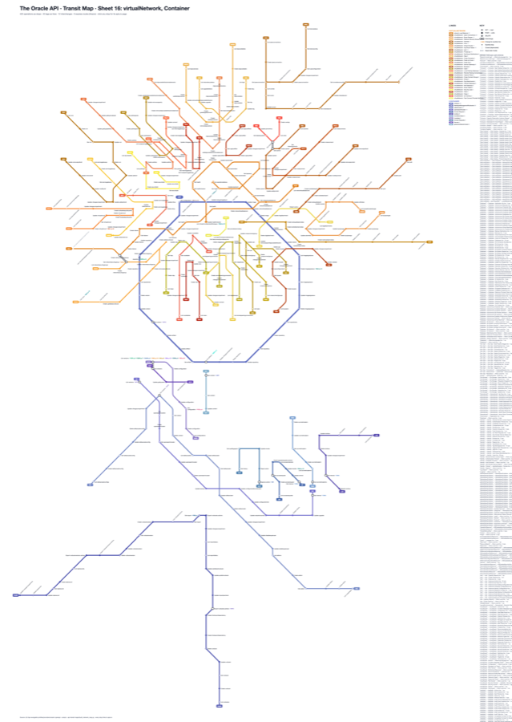
p.16 virtualNetwork, Container
423 operations · 43 lines
Interchanges to p.1 (2), p.2 (2), p.3 (2), p.4 (1), p.7 (2), p.8 (1), p.10 (6), p.12 (1), p.14 (2), p.15 (1)
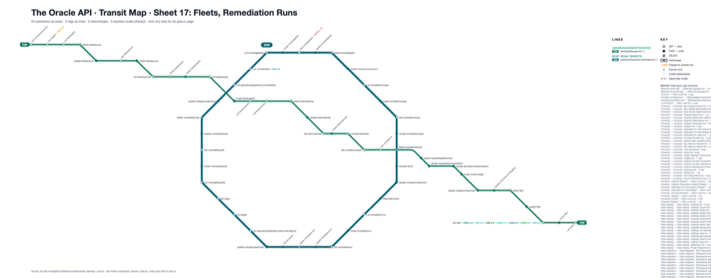
p.17 Fleets, Remediation Runs
64 operations · 2 lines
Interchanges to p.8 (1), p.9 (7), p.12 (2)